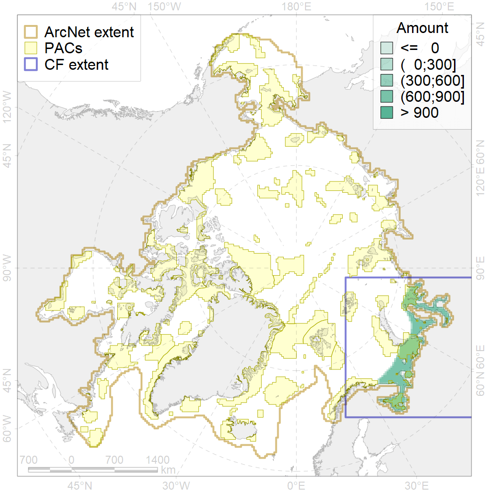
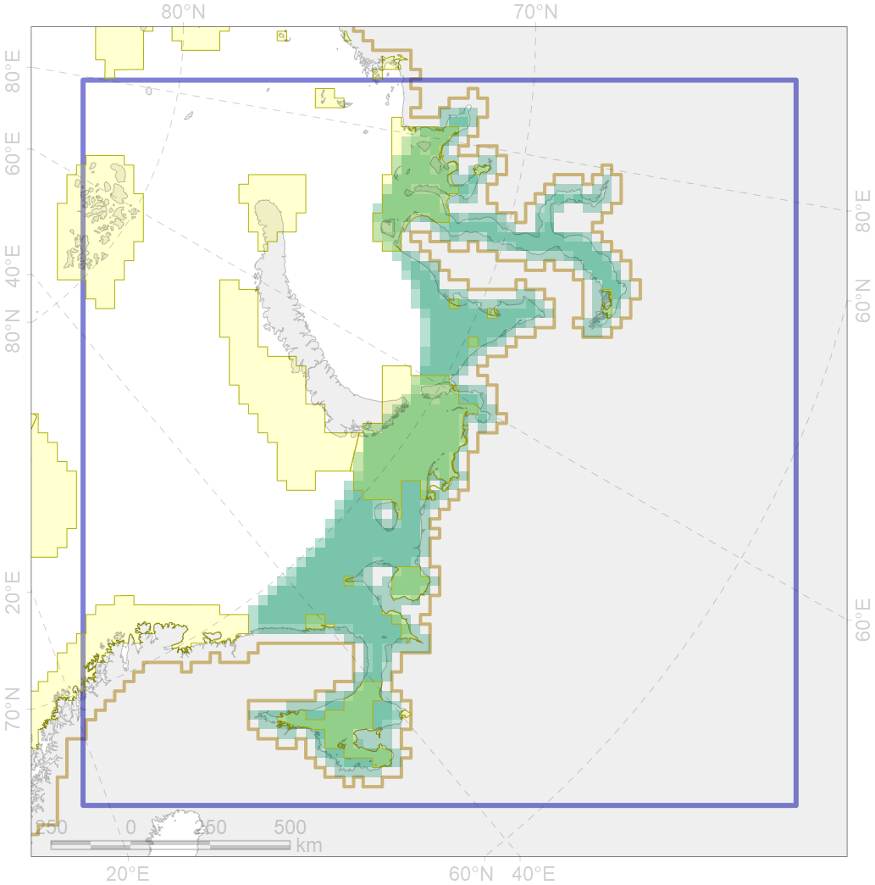

4043

| CF code | 4043 |
| CF name | Range of Nawaga (Eleginus nawaga) |
| Time Period | 1930s-2010s |
| Source(s) | Chernova, 2011; Mecklenburg et al., 2018 |
| Seasonality | Jan-Dec |
| Depth Horizon | 0-50 m |
| Methodology | Compiled from literature sources based on field observations |
| Use Restrictions | Open sources |
| Author Name | N. Chernova |
| Notes | Chernova (2011) compiled the data of: Svetovidov, 1948; Andriashev, 1954; Svetovidov, 1986; Ponomarenko, 1995; Ecosystem, 2008 |
| Scenario’s Target | 0.12 |
| Target Achievement | 0.419 (Scenario: 349.1%) |
| PAC | Share of the Total Amount within the PAC | Share of the Target Achievement for the ArcNet | PAC’s Contribution to the Target Achievement |
|---|---|---|---|
| 16 | 9.6%10.2% | 76.7%79.9% | 21.9%22.8% |
| 17 | 0.1%0.2% | 0.8%1.8% | 0.2%0.5% |
| 18 | 0.5%0.5% | 3.7%3.8% | 1.0%1.1% |
| 20 | 18.3%19.0% | 147.5%152.6% | 42.1%43.6% |
| 21 | 0.0%0.1% | 0.0%1.0% | 0.0%0.3% |
| 23 | 1.9%2.2% | 14.3%15.9% | 4.1%4.5% |
| 24 | 0.5%0.7% | 3.7%5.2% | 1.0%1.5% |
| 25 | 0.6%0.8% | 4.2%5.6% | 1.2%1.6% |
| 26 | 6.9%7.7% | 48.1%53.1% | 13.7%15.2% |
| inner | 38.5%41.6% | 298.9%318.8% | 85.4%91.1% |
| outer | 60.9%75.5% | 50.1%149.7% | 14.3%42.7% |
| † supplement values are for area consistence whereas principal values are for Accenter compatible gridded stats |